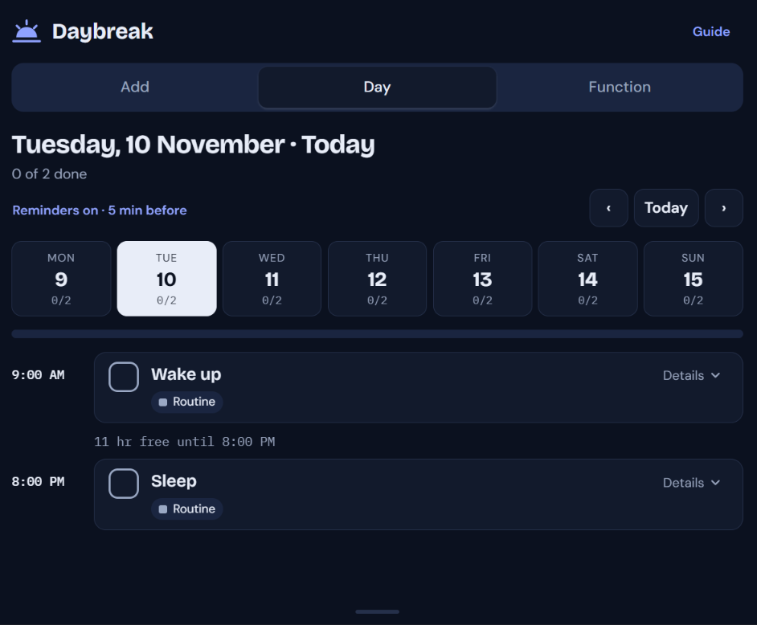
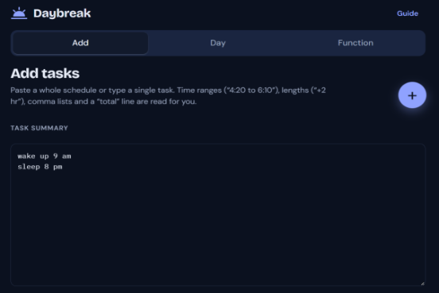
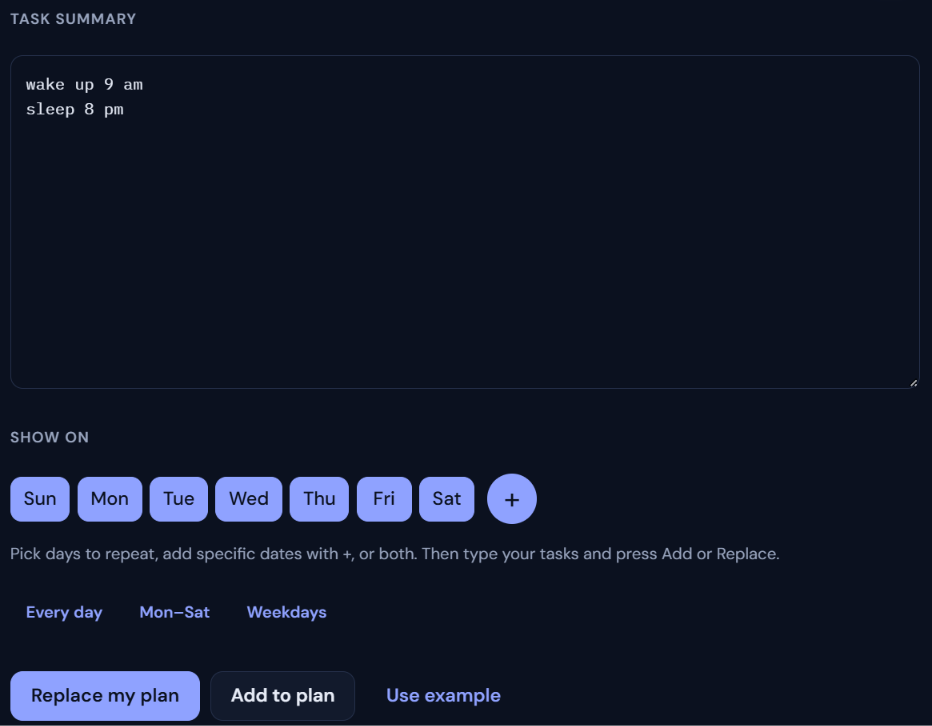
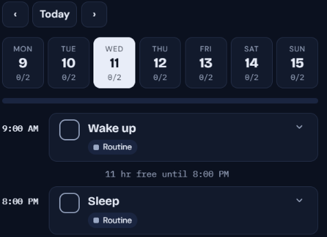
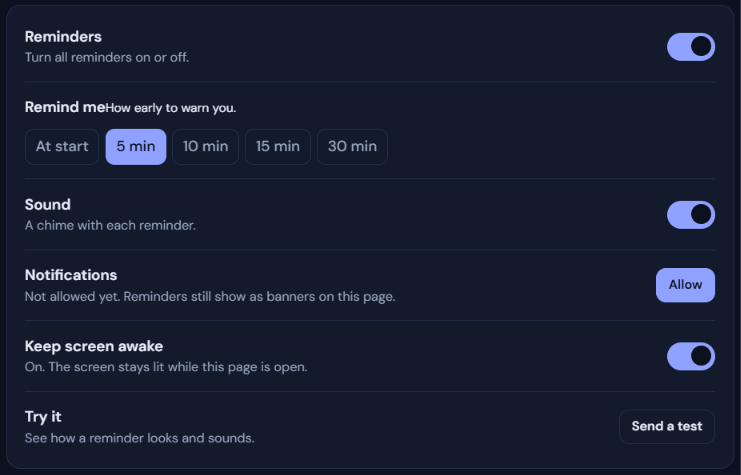
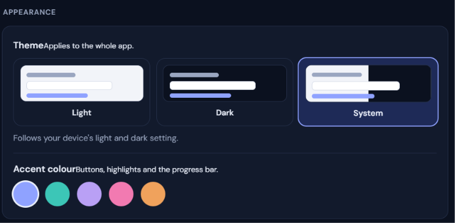
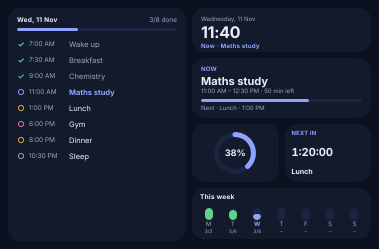

Daybreak
Plan every day
Daybreak Planner is a simple task planner and daily planner. Pick the days or dates you want, add your tasks or just explain the task our local ai will run and turn your discription into task, and start every morning with a clear plan. It works on the web and on Android.

-resized.png) GitHub
GitHub-resized.png) Supabase
Supabase-resized.png) HTML
HTML-resized.png) CSS
CSS-resized.png) Java script
Java scriptWhy people choose Daybreak
Pick days or dates
Choose day chips or use the + date chooser. Each date you pick shows as a circle, and you can add several.
Show on · Add tab
Add to plan or replace
Add new tasks to the days you chose, or replace your plan to clear everything first.
Task summary
Start over, with Undo
Reset the planner to empty in one tap. Changed your mind? Undo brings your plan back.
Function tab
A planner that starts with the day
Daybreak is made for people who plan by day. Choose when a task happens first, then add the task, for one day or for several dates at once. The theme follows your device's light or dark setting, so it looks right morning and night.
Learn more about DaybreakReady to plan your first day?
About Daybreak
Daybreak Planner is a task planner and daily planner for the web and Android. It keeps planning simple: choose the day, add the task, and see your plan at a glance.
Planning that begins with “when”
In the Add tab, the Show on row lets you pick day chips or open the + date chooser, and every chosen date appears as a circle. Write your tasks, then use Add to plan to put them on all the days and dates you chose. If you'd rather start fresh, Replace my plan clears everything first and then adds the new tasks.

What we stand for
Pick the day first
Every task belongs to a day or a date, so you always know when it happens.
Day chips and dates
Easy to undo
Start over resets the planner to empty, and Undo is right there if you change your mind.
Start over with Undo
Looks right everywhere
One planner on the web and on Android, in light or dark.
Follows your device
The Add tab with Show on day chips and a + date chooser, plus Task summary.
Add to plan
Start over in the Function tab, with Undo, and a theme that follows your device.
Replace my plan
The Add tab, Task summary and Start over match the web version.
Needs one build
Guides, About, Contact, Privacy and Terms, plus new task planner and daily planner pages.
In progress
Plan your next day with Daybreak
Features
Everything you need to plan a day: choose when, add your tasks, and fix mistakes quickly.
Show on: days and dates
Tap a day chip or use the + date chooser. Each chosen date appears as a circle.
Add several days and dates in one go.
Where: Add tab
Learn moreTask summary
Explain your each task in a new line and it gets converted into Task
Or wants to add summary for a day in 'Day' section grab the small line from the bottom and drag up
Where: Add tab and Day tab at very bottom
Learn moreStart over, with Undo
Reset the planner to empty from the Function tab.
Reset by mistake? Undo restores your plan.
Where: Function tab
Learn moreLight and dark theme
Daybreak follows your device's light or dark setting.
Prefer one? Choose Light or Dark in the Function tab.
Automatic by default
Learn moreCustom color theams
Our app provides a few custom color themes inside its light and dark themes, letting users customize the button and logo colors.
User can also chose App logo.
Where: Functions tab
Learn moreAndroid
Android visitors get an APK download popup once they open Daybreak's web App from the learn more link.
App can be updated inside function tab at the bottom
Popup will be shown when update is avalabel
Learn moreHow it works
Pick days
Choose day chips, or add dates with the + chooser.
Show on
Add tasks
Write the tasks you want on those days.
Add tab
Add or replace
Use Add to plan, or Replace my plan to start fresh.
Task summary
Undo if needed
Start over resets the planner, and Undo brings it back.
Function tab
Plan several days at once
Choose a few day chips and extra dates, write your tasks once, and Add to plan puts them on every day you picked. Starting fresh? Replace my plan clears everything first, then adds the new tasks.

Ready to plan your day?
What's inside
Daybreak is a web app and an Android app, backed by guides and search-friendly pages.
Add tab, Task summary and Start over in one place.

Some different features like widgets.
Adding a task for each day by just describing it.

Recive notification few munits earlier then you start

App provides light and dark theam as well as custom one als0

Our app provides you some widgets to show task completed , current task , etc.. on your home screen
Want to try Daybreak?
Common questions
You'll see “Pick a day or a date first.” Choose a day chip or a date, then add your tasks.
Add tab
Add to plan adds tasks to the chosen days and dates. Replace my plan clears everything first, then adds the new tasks.
Task summary
Yes. Start over in the Function tab resets the planner to empty, and Undo brings your plan back.
Function tab
Yes. It follows your device's light or dark setting until you pick Light or Dark in the Function tab.
Function tab